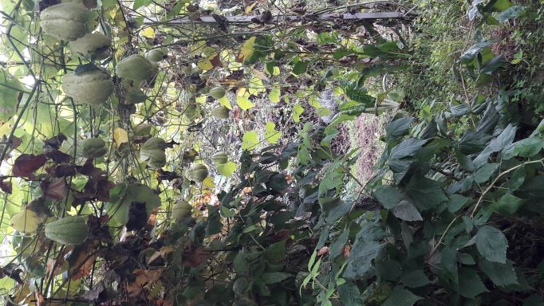
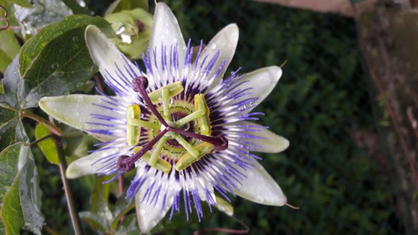
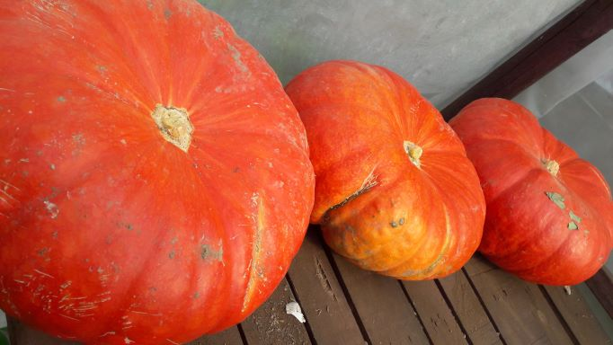
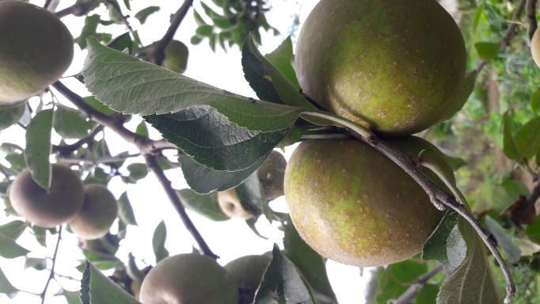
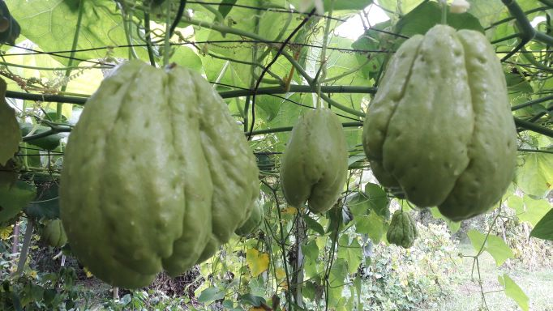
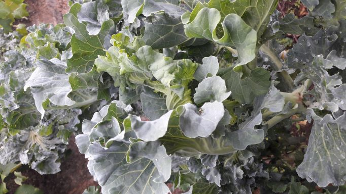
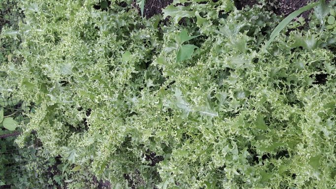
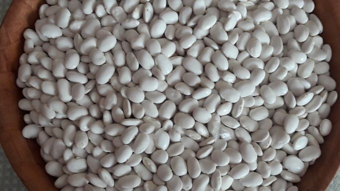
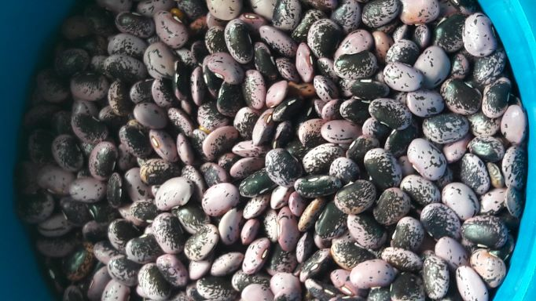
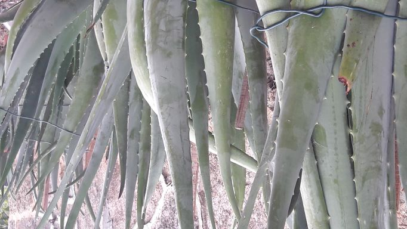

Hola, ¿qué hai trala cancela verde?
A Cancela Verde é unha explotación agraria familiar (no REAGA)
que está nun lugar onde sempre se traballou a terra mesmiño na Coruña (CTV).
Vámola ir abrindo xa...
...pronto a verás a todo color ;-)
Nembargantes a continuación amosarémosvos algo do que xa hai tras dela :-)
Hai cero fitosanitarios, a de 2021 foi a primeira colleita que fixemos deste xeito.
Hai vontade de segui-los criterios do CRAEGA, déixennos ou non obte-la certificación.
Hai dedicación e traballo, métodos tradicionáis, respecto ó medio
(mantemos o entorno limpo e bonito, prantamos alimento para os silvestres, hotéis de insectos, compostaxe, etc, etc...)
Hai selección das variedades máis resistentes e axeitadas ó entorno.
Hai excedentes do que nós mesmos consumimos, para poder, afortunadamente, compartir.
E hai un lote de cousas ás que lle facer fotos e que de seguido engadimos, ¡disfrutádeas!
...xa estamos recollendo para o inverno de 2021
- ¡Recollemos!

volta ó Inicio - ¡Recollemos!

volta ó Inicio - ¡Recollemos!

volta ó Inicio - As chaiotas lisas medran a pracer...

volta ó Inicio - Unha flor moi coñecida, cun froito delicioso!

volta ó Inicio - No inverno toca recollerse, descansa-la terra, o seu tempo de lecer!
volta ó Inicio
...algúns dos que temos ou teremos no outono de 2021
- Laranxas, ¡han vir!

volta ó Inicio - Kiwis, ¡medrando!

volta ó Inicio - O cabazo de sempre

volta ó Inicio - Varios tipos de mazás

volta ó Inicio - As chaiotas sen pinchos...

volta ó Inicio - ...hai quen lles chama patacas do aire, ¡nova tradición!

volta ó Inicio - Coles rizas

volta ó Inicio - Escarolas

volta ó Inicio - Faba branca

volta ó Inicio - Faba violeta

volta ó Inicio - Follas de Aloe Vera, ¡todo o ano!

volta ó Inicio - No outono xa poucas cousas medran, algo queda, se cadra endivias, algunha cebola, etc, etc... :-)
volta ó Inicio
Cousas que no seu tempo poderás atopar trala cancela verde....
- Leituga lisa, ¡tenra!

volta ó Inicio - Leituga riza, ¡saborosa!

volta ó Inicio - Fresas, ¡doces!

volta ó Inicio - Frambuesas, ¡recién!

volta ó Inicio - Cherry pera, ¡caramelos!

volta ó Inicio - Cherry azul, ¡carne e sabor!

volta ó Inicio - Cherry marelo, ¡contraste!

volta ó Inicio - Remolacha, ¡doce!

volta ó Inicio - Pimento, ¡qué boa pinta!

volta ó Inicio - Repolo liso, ¡pequeno e suave!

volta ó Inicio - Repolo rizo, ¡o de sempre!

volta ó Inicio - Espinacas e acelgas, ¡para cocelas!

volta ó Inicio - Limón, ¡perfecto todo o ano!

volta ó Inicio - Mazá reineta, ¡chea de sabor!

volta ó Inicio - Pimentos..., ¡uns pican e outros non!

volta ó Inicio - Pimento verde, ¡que non falte no guiso!

volta ó Inicio - Xudía marela, ¡a tenrura!

volta ó Inicio - Cabaza, ¡vindo estupendamente!

volta ó Inicio - Cabaza, ¡coma mel!

volta ó Inicio - Mazá golden, ¡a mellor!

volta ó Inicio - Mazá granny smith, ¡a máis potente!

volta ó Inicio - Pexegos, ¡grandes!

volta ó Inicio - Coles, ¡fan un caldo perfecto!

volta ó Inicio - Tomates

volta ó Inicio - Calabacíns

volta ó Inicio - Fabas, ¡que fabada fan!

volta ó Inicio
...eu teño os meus favoritos
e máis cousiñas que tivemos trala cancela verde que non son de comer... algunhas moi lindas :)
- Aloe vera: unha folla, o mellor remedio

volta ó Inicio - cor e ledicia

volta ó Inicio - cor e ledicia

volta ó Inicio - cor e ledicia

volta ó Inicio - cor e ledicia

volta ó Inicio